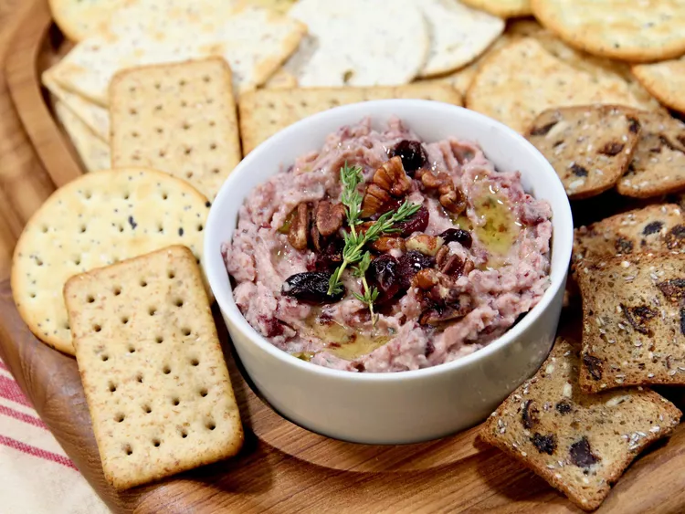

Cranberry Hummus

Description
Thanksgiving dinner is a lot of work, but a make-ahead Thanksgiving appetizer doesn't have to be. This is a great way to keep your hungry guests happy until the big meal hits the table. Serving suggestions are toasted pita bread wedges, crackers, crostini, or fresh veggies. And if you have any left, use it as a spread on a turkey sandwich.
Ingredients
- 1 (15 ounce) can cannellini beans
- ½ cup chopped dried cranberries
- 2 tablespoons olive oil
- 1 tablespoon freshly squeezed lemon juice
- 1 tablespoon chopped fresh thyme
- ¼ teaspoon ground cinnamon
- 1 clove garlic, crushed
- 3 tablespoons chopped pecans
Steps
- Drain cannellini beans and reserve liquid.
- Combine cannellini beans, cranberries, olive oil, lemon juice, thyme, cinnamon, and garlic in a food processor; blend until smooth. If too thick, thin out to your desired consistency by blending in some of the reserved bean liquid.
- Stir in chopped pecans, and season to taste with salt. Store in the refrigerator in an air-tight container until ready to serve.
- Garnish with additional cranberries, pecans, and a drizzle of olive oil, if desired.